멀티미디어콘텐츠제작전문가 (2020-08-22 기출문제)
1과목: 멀티미디어개론
1. IPv6의 주소체계는 몇 Bit인가?
- 32bit
- 64bit
- 128bit
- 256bit
(정답률: 82%)

2. 5비트를 사용하여 양자화 하는 경우 양자화 step의 수는?
- 8
- 16
- 32
- 64
(정답률: 80%)
3. IPSec(Internet Protocol Security)에서 기밀성 서비스를 기반으로 선택적인 무결성 서비스를 제공하는 프로토콜은?
- AH(Authentication Header)
- PAA(Policy Approval Authorities)
- ESP(Encapsulating Security Payload)
- IKE(Internet Key Exchange)
(정답률: 78%)
4. TCP/IP 프로토콜을 사용하는 응용프로그램으로 특정한 호스트에 IP 데이터그램이 도착할 수 있는지를 검사하는데 사용하는 서비스는?
- ping
- rlogin
- telnet
- ftp
(정답률: 76%)
5. 이메일 보안기술 중의 하나인 PGP(Pretty Good Privacy)에 대한 설명이 아닌 것은?
- 개인이 개발한 보안 기술이다.
- 전자 우편의 수신 부인 방지 및 메시지 부인 방지를 지원한다.
- 기밀성과 무결성 등을 지원한다.
- RSA와 IDEA 등의 암호화 알고리즘을 사용한다.
(정답률: 75%)
6. 차세대 웹으로 불리는 Semantic Web의 핵심 기술과 가장 거리가 먼 것은?
- explicit metadata
- ontologies
- logical reasoning
- zigbee
(정답률: 81%)
7. TCP/IP 계층에서 사용되는 프로토콜 중 응용계층에 해당하는 프로토콜이 아닌 것은?
- TELNET
- TCP
- HTTP
- FTP
(정답률: 67%)
8. 다음 내용이 설명하는 유닉스 명령어는?
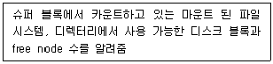
- df
- file
- find
- vr
(정답률: 72%)
9. WEP(Wired Equivalent Privacy) 보안에 대한 설명이 아닌 것은?
- IEEE 802.11b 표준에 정의된 WLAN에 대한 보안 프로토콜이다.
- 무선 단말과 액세스 포인트가 동일한 WEP키를 공유한다.
- 사용자 인증과 부인방지를 지원한다.
- 24비트 초기화 벡터를 이용하여 키 스트림을 반복 해서 생성한다.
(정답률: 54%)
10. 스토리지 장비 중 DAS(Direct Attached Storage)에 대한 설명으로 옳지 않은 것은?
- 시스템에 직접 붙이는 외장 스토리지 이다.
- 다른 서버에 할당된 저장 장치 영역에는 접근이 금지된다.
- 서버가 채널을 통해 대용량 저장장치에 직접 연결하는 방식이다.
- 대용량 트랜잭션 처리를 필요로 하는 DB 업무에 적합하다.
(정답률: 64%)
11. 정보의 통계적인 확률을 이용하여 기호의 발생 빈도가 높으면 짧은 부호를, 낮으면 긴 부호를 할당하여 평균 부호 길이가 최소가 되도록 하는 방식은?
- 객체 모델링 기법
- 색 참조 기법
- 가변길이 부호화 기법
- 메시지 다이제스트 기법
(정답률: 88%)
12. H.264/MPEG-4 AVC 기술과 비교하여 약 1.5배 높은 압축률을 가지면서도 동일한 비디오 품질을 제공하는 고효율 비디오 코딩 표준으로 H.265라고도 불리는 이 코딩 기술은?
- MPEG2
- HEVC
- AVC
- IESG
(정답률: 78%)
13. 컴퓨터그래픽스에서 캘리브레이션(Calibration)이란?
- 하드웨어 장치와 소프트웨어 장치를 총칭
- 우연적인 기법과 순수 미술의 느낌을 내는 작업
- 모니터의 색상과 인쇄물의 색상 차이를 보정하는 작업
- 컬러 이미지를 그레이 스케일로 변경하는 작업
(정답률: 83%)
14. 다음이 설명하는 증강현실 구현 프로그래밍 언어는?
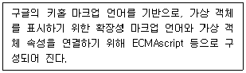
- DHTML
- SAML
- ARML
- XMLSheet
(정답률: 63%)
15. DRM(Digital Rights Management) 구성 요소로 거리가 먼 것은?
- 형상통제
- 콘텐츠 제공자
- 클리어링 하우스
- 콘텐츠 소비자
(정답률: 63%)
16. 공개키로 사용하는 알고리즘을 대표하는 것은?
- DES
- AES
- RC5
- RSA
(정답률: 77%)
17. 사물에 센서와 통신 기능을 내장하여 인터넷에 연결 하는 기술을 의미하는 IoT(Internet of Things)의 표준화와 가장 거리가 먼 것은?
- SPICE
- Thread Group
- IEEE P2413
- Open Connectivity Foundation
(정답률: 60%)
18. 16비트 디지털 오디오의 다이내믹 레인지는 약 몇 dB인가?
- 16
- 36
- 76
- 96
(정답률: 68%)
19. 데이터의 무결성을 검증하는 보안 알고리즘은?
- Hash Function
- UH
- SXL
- MEM
(정답률: 73%)
20. 운영체제를 둘러싸고 있으면서, 입력받은 명령어를 실행하는 명령어 해석기는?
- Command User Interface
- Shell
- Register
- Process
(정답률: 75%)
2과목: 멀티미디어기획및디자인
21. 이미 만들어진 활자를 이용하는 것이 아니라 직접 드로잉을 통해 글자를 만드는 것은?
- 폰트
- 로고 타입
- 레터링
- 시그니처
(정답률: 84%)
22. 모션블러(Motion-Blur)에 대한 설명으로 틀린 것은?
- 카메라 앞에서 너무 빨리 움직이는 물체가 흐리게 보이는 현상이다.
- 이 현상은 물체의 속도가 빨라지고 대상물이 카메라와 가까워짐에 따라 감소한다.
- 컴퓨터 그래픽에서 고속으로 운동하고 있는 물체를 표현하는 방법 중 하나이다.
- 컴퓨터 애니메이션에서는 자동적으로 일어나지 않으며 제작자가 추가해야 한다.
(정답률: 77%)
23. 명도에 대한 설명으로 틀린 것은?
- 우리의 감각은 색상, 명도, 채도 대비 중 명도대비에 가장 민감하다.
- 명도 단계는 흰색부터 검정까지 총 3단계이다.
- 명도대비는 밝은 색은 더 밝게, 어두운 색은 더 어둡게 보이는 현상이다.
- 명도대비의 결과는 한마디로 흰색, 회색, 검정색의 조화라고 볼 수 있다.
(정답률: 74%)
24. 다음은 누구의 색채조화론에 대한 설명인가?
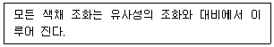
- 뉴턴
- 괴테
- 슈브뢸
- 베졸드
(정답률: 73%)
25. 웹 디자인에서 메타포의 활용에 대한 설명으로 틀린 것은?
- 아이콘이나 네비게이션 디자인 등에 부분적으로 활용할 수 있다.
- 무조건 메타포를 활용해야 좋은 디자인을 할 수 있다.
- 콘셉트 전체를 이끌어 가는 수단으로 활용할 수 있다.
- 개성 있고 창의적인 웹 사이트를 만들고자 하는 데 있어 매우 좋은 방법이다.
(정답률: 89%)
26. 다음이 설명하는 매핑(Mapping) 처리 기법은?
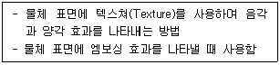
- 텍스쳐 매핑(Texture Mapping)
- 솔리드 텍스쳐 매핑(Solid Texture Mapping)
- 범프 매핑(Bump Mapping)
- 패턴 매핑(Pattern Mapping)
(정답률: 68%)
27. 편집디자인에서 레이아웃(layout)의 작업에 대한 설명으로 옳은 것은?
- 의사 전달 목적과 관련된 사진을 합성하는 작업
- 시각적 구성 요소들을 조합하여 상호간 기능적으로 배치, 배열하는 작업
- 내용을 전달하는 그림을 스케치하는 작업
- 편집의 처리규정과 운영방법을 계획하는 작업
(정답률: 87%)
28. 큐비즘에 영향을 받은 몬드리안이 전개한 운동은?
- 퓨리즘 운동
- 팝아트 운동
- 데스틸 운동
- 미술공예 운동
(정답률: 69%)
29. 인터넷 마케팅의 4C에 해당되지 않는 것은?
- Commerce
- Community
- Communication
- Customer
(정답률: 57%)
30. 제품의 가치 판단 기준이 바르게 연결된 것은?
- 합리성 : 프로세스, 팀워크, 시스템의 문제
- 독창성 : 사용자의 심리적인 욕망을 충족
- 경제성 : 디자이너의 조형능력 및 창조력
- 심미성 : 제품의 경제성 고려
(정답률: 76%)
31. 굿 디자인(Good Design) 조건으로 틀린 것은?
- 가독성
- 경제성
- 독창성
- 합목적성
(정답률: 63%)
32. 타이포그래피에 대한 설명으로 틀린 것은?
- 메시지를 전달하는데 있어 매우 중요한 요소이다.
- 회화, 사진, 도표, 도형 등을 시각화한 것을 말하며 문장이나 여백을 보조하는 단순한 장식적 요소이다.
- 글자를 가지고 하는 디자인으로 예술과 기술이 합해진 영역이다.
- 글자의 크기, 글줄 길이, 글줄 사이, 글자 사이, 낱말 사이, 조판 형식, 글자체 등이 조화를 이루었을 때 가장 이상적이다.
(정답률: 83%)
33. 저드(D. B. Judd)의 색채조화론 원리가 아닌 것은?
- 질서의 원리
- 유사의 원리
- 명료성의 원리
- 색채의 원리
(정답률: 58%)
34. Ecology design이란 말의 뜻은?
- 인간과 자연과의 조화를 위한 디자인
- 인간과 기계와의 조화를 위한 디자인
- 자연과 사회와의 조화를 위한 디자인
- 인간만을 위한 디자인
(정답률: 83%)
35. 신문, 잡지, 브로슈어, 서적, 홈페이지 등에서 시각물을 기능적으로 구성하고, 그 구성 속에 정보의 위계를 탄생시키는 분야는?
- 제품 디자인
- 환경 디자인
- 애니메이션
- 에디토리얼 디자인
(정답률: 79%)
36. 다음의 내용이 설명하는 기법은?
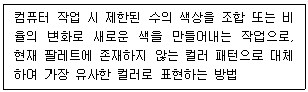
- 컬러 조정(Color Adjustment)
- 디더링(Dithering)
- 컬러 변화(Color Variation)
- 인덱스드 컬러모드(Indexed Color Mode)
(정답률: 69%)
37. 멀티미디어 시스템의 구성요소가 아닌 것은?
- 그래픽
- 프로듀서
- 사운드
- 텍스트
(정답률: 86%)
38. 한국산업표준(KS)의 표기방법 중 '빨강'을 먼셀기호로 바르게 표기한 것은?
- 10R 6/10
- 5R 4/12
- 5GY 7/10
- 5G 5/6
(정답률: 81%)
39. 영상 분석에서 사용하는 4가지 주요 방법이 아닌 것은?
- 영상 컬러
- 영상 분할
- 영상 변환
- 특징 추출
(정답률: 55%)
40. 다음 내용은 제품 수명 주기의 단계에서 어느 시기 인가?
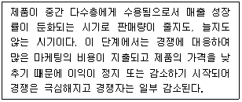
- 도입기
- 성장기
- 성숙기
- 쇠퇴기
(정답률: 76%)
3과목: 멀티미디어저작
41. Pro*C처럼, SQL을 지원하지 않는 프로그래밍 언어 시스템에서 SQL 구문을 사용할 경우, 해당 언어 에서 바로 사용할 수 있도록 처리해주는 SQL은?
- DCL
- DDL
- EMBEDDED SQL
- PL/SQL
(정답률: 56%)
42. 하나의 애트리뷰트가 가질 수 있는 같은 타입의 원잣값들의 집합을 의미하는 것은?
- 튜플
- 메소드
- 엔티티
- 도메인
(정답률: 59%)
43. HTML5의 ＜video＞ 태그에서 사용된 poster 속성은?
- 동영상 넓이를 지정
- 재생할 동영상이 로드 중이거나 버퍼링 중일 때 보여질 이미지 URL을 지정
- 동영상 높이를 지정
- 동영상 파일을 다운로드하여 재생하는 방식 지정
(정답률: 76%)
44. 다음 자바스크립트 코드의 실행 결과는?
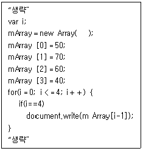
- 40
- 50
- 60
- 70
(정답률: 64%)
45. HTML5에서 새롭게 추가된 API로 브라우저와 사용자 간의 쌍방향 전이중 통신을 실현하기 위한 것은?
- Web Sockets
- Web Sql Database
- Web Storage
- Web Workers
(정답률: 61%)
46. SQL문의 뷰(View) 특성으로 틀린 것은?
- 데이터의 논리적 독립성을 제공할 수 있다.
- 뷰 위에 또 다른 뷰를 정의할 수 있다.
- 뷰는 하나의 테이블에서만 유도되어 만들어진다.
- 뷰는 가상 테이블이다.
(정답률: 70%)
47. 다음 SQL문을 실행한 결과는?
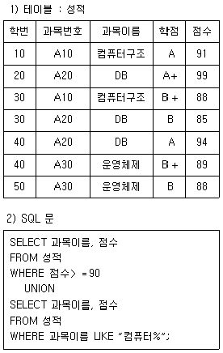
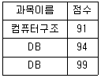
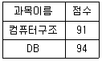
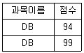
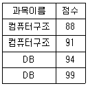
(정답률: 70%)
48. DBMS의 필수 기능 중 제어 기능에 대한 설명으로 옳지 않은 것은?
- 데이터베이스를 접근하는 갱신, 삽입, 삭제 작업이 정확하게 수행되어 데이터의 무결성이 유지되도록 한다.
- 정당한 사용자가 허가된 데이터만 접근할 수 있도록 보안을 유지하고 권한을 검사할 수 있어야 한다.
- 여러 사용자가 데이터베이스를 동시에 접근하여 데이터를 처리할 때 처리 결과가 항상 정확성을 유지하여야 한다.
- 데이터와 데이터 관계를 명확하게 명세할 수 있어야 하며, 원하는 데이터 연산은 무엇이든 명세할 수 있어야 한다.
(정답률: 56%)
49. HTML 문서의 모든 내용이 화면에 출력된 이후에 함수 init를 호출하여 실행하는 자바스크립트 코드는?
- window.init;
- window.upload;
- window.init＝onload;
- window.onload＝init;
(정답률: 63%)
50. 자바스크립트에서 간단한 경고창, 프롬프트창 표시, 특정시간마다 동일 동작 반복, 특정시간 경과 후 주어진 동작을 하는 기능을 제공하는 내장 객체는?
- Window 객체
- History 객체
- Document 객체
- Location 객체
(정답률: 64%)
51. 데이터베이스 설계의 논리적 설계 단계에서 수행 하는 작업이 아닌 것은?
- 논리적 데이터 모델로 변환
- 트랜잭션 인터페이스 설계
- 저장 레코드 양식 설계
- 스키마의 평가 및 정제
(정답률: 44%)
52. SQL문 저장 프로시저(Stored procedure)의 역할로 틀린 것은?
- 오픈형 설계
- 데이터 무결성의 시행
- 복잡한 비즈니스 규칙과 제약의 강화
- 유지 보수의 용이
(정답률: 42%)
53. 2NF(제2정규형)에서 3NF(제 3 정규형)가 되기 위한 조건은?
- 부분적 함수 종속 제거
- 이행적 함수 종속 제거
- 다치 종속 제거
- 결정자이면서 후보 키가 아닌 것 제거
(정답률: 59%)
54. 관계 데이터베이스 모델에서 데이터베이스를 구성 하는 가장 작은 논리적 단위로 파일 구조상의 데이터 항목에 해당하는 것은?
- Tuple
- Attribute
- Degree
- Domain
(정답률: 53%)
55. 자바스크립트 Window 객체에서 사용자에게 확인을 필요로 하는 대화상자를 생성할 때 사용하는 메소드는?
- alart( )
- confirm( )
- open( )
- print( )
(정답률: 68%)
56. 자바스크립트에서 매개변수가 숫자인지 검사하는 함수는?
- isNaN( )
- alart( )
- confirm( )
- escape( )
(정답률: 59%)
57. 자바스크립트에서 두 개의 배열을 하나의 배열로 만들 때 사용되는 메소드는?
- deleteRow( )
- sort( )
- concat( )
- slice( )
(정답률: 55%)
58. 자바스크립트 변수 선언 방법으로 틀린 것은?
- var a＝5
- var _b＝30
- var ab＝87
- var catch＝“well come”
(정답률: 72%)
59. SQL에서 VIEW를 삭제할 때 사용하는 명령은?
- DROP
- ERASE
- DELETE
- KILL
(정답률: 68%)
60. SQL의 Select 문에서 검색조건을 지정하는 것은?
- OUT
- FROM
- WHERE
- MODIFY
(정답률: 71%)
4과목: 멀티미디어제작기술
61. 대역폭이 적은 통신 매체에서도 전송이 가능하고, 양방향 멀티미디어를 구현할 수 있는 A/V(Audio／Video) 표준 부호화 방식으로, 64kbps 급의 초저속 고압축률 실현을 목적으로 하는 동영상 압축 표준안은?
- MPEG-1
- MPEG-2
- MPEG-4
- MPEG-7
(정답률: 63%)
62. 적외선을 쪼이면 발광하는 물질이 칠해진 마커를 액터의 관절 부위에 부착하여 반사된 빛을 비디오카메라로 촬영한 후, 3차원 공간상에서의 위치를 파악 하는 모션캡쳐 방식은?
- 광학식 방식
- 기계식 방식
- 자기식 방식
- 전자식 방식
(정답률: 84%)
63. 영상 합성 기술을 통하여 얻을 수 있는 효과와 거리가 먼 것은?
- 전경 영상의 교체
- 배경 영상의 교체
- 잡음의 제거
- 데이터 전송 속도 조절
(정답률: 73%)
64. TGA 파일 포맷에 대한 설명으로 틀린 것은?
- 비디오 이미지를 저장하기 위해 개발된 포맷이다.
- 8비트 알파 채널을 지원한다.
- RGB 신호를 디지털화한 데이터 포맷이다.
- Bitmap, PostScript 이미지를 동시에 저장하고, RGB 컬러와 알파 채널을 지원한다.
(정답률: 47%)
65. 조명의 종류에 대한 설명으로 틀린 것은?
- 키라이트 : 피사체의 주광선으로 피사체의 밝기를 얻는데 쓰인다.
- 후트라이트 : 키 라이트에 의해 생기는 음영을 연하게 하기 위해 쓰인다.
- 베이스 라이트 : 전체를 평균적으로 밝게 하는데 쓰인다.
- 백 라이트 : 배우를 포함 출연자의 형상을 부각시키고 배경과 분리해 내기 위해 무대 장치나 출연자 뒤로부터 나오는 조명으로 쓰인다.
(정답률: 78%)
66. 동영상 관련 압축 알고리즘이 아닌 것은?
- TOONZ
- MPEG-2
- H.264
- DVI
(정답률: 75%)
67. 스피커의 특정 주파수 신호를 입력하여 스피커의 정면 축상의 특정 거리에 생기는 출력 음악 레벨은?
- 감도
- 파워
- 임피던스
- 지향
(정답률: 57%)
68. 면과 면이 만나서 이루는 모서리를 표현하고 오직 선(Line)으로만 표현하는 모델링 방식은?
- 바운더리 모델링
- 서피스 모델링
- 와이어 프레임 모델링
- 솔리드 모델링
(정답률: 74%)
69. 소리나 빛이 진행하다가 장애물을 만나면 차단되지 않고 장애물의 뒤쪽까지 전파되는 현상은?
- 회절
- 반사
- 간섭
- 굴절
(정답률: 75%)
70. 애니메이션의 화면 구성에서 인물을 무릎에서부터 위로 잡는 기법은?
- American Shot
- Full Shot
- Wide Shot
- Long Shot
(정답률: 70%)
71. 양지향성과 단일지향성의 마이크를 음원에 가까이 대고 사용하면 저음의 출력이 증가되는 현상은?
- 칵테일파티 효과
- 회절
- 도플러 효과
- 근접 효과
(정답률: 78%)
72. 3D 객체에 사진, 그림, 문양을 입히는 기술은?
- 매핑
- 렌더링
- 쉐이딩
- 스키닝
(정답률: 73%)
73. 도려내기 효과라고도 불리며 잘려진 종이 등의 재질을 이용하여 분절된 움직임을 연출하고 이를 프레임별 촬영을 통하여 완성하는 애니메이션 기법은?
- 퍼핏(Puppet)
- 컷 아웃(Cut Out)
- 클레이 애니메이션(Clay animation)
- 로토스코핑(Rotoscoping)
(정답률: 75%)
74. 물체에 반사된 빛이 다른 물체에 반사될 때까지 추적하여 투영과 그림자까지 완벽하게 표현하는 렌더링 방식은?
- 레이 트레이싱(Ray Tracing)
- 범프 매핑(Bump Mapping)
- 스캔 라인(Scan Line)
- 텍스쳐 매핑(Texture Mapping)
(정답률: 73%)
75. 넌 리니어(Non-Linear) 편집에 대한 설명으로 옳은 것은?
- 순차적인 편집 방식이다.
- Tape과 Tape의 편집은 실시간으로 이루어진다.
- 편집 변동 시 시간 소모와 화질열화의 문제점을 가진다.
- 원하는 이미지나 음향의 복사 및 위치 변경이 용이하다.
(정답률: 67%)
76. 물체 경계면의 픽셀을 물체의 색상과 배경의 색상을 혼합해서 표현하여 경계면이 부드럽게 보이도록 하는 기법은?
- 투영(Projection)
- 디더링(Dithering)
- 모델링(Modeling)
- 앤티앨리어싱(Antialiasing)
(정답률: 79%)
77. 3차원 모델링에서 제어점들이 스플라인 곡선상에 놓이지 않고, 스플라인 곡선 주변에 설정되는 기본 스플라인의 변형 방법은?
- 베지어(Bezier) 스플라인 모델
- B-스플라인(B-Spline) 모델
- 넙스(Nurbs) 모델
- 패치(Patch) 모델
(정답률: 64%)
78. MPEG-2 표준과 관계없는 것은?
- 순차주사 방식과 격행주사 방식 모두 지원
- 1.5Mbps 이하의 전송 속도
- 디지털 TV
- MPEG-1에 대한 순방향 호환성 지원
(정답률: 58%)
79. 3차원 컴퓨터 애니메이션 제작과정으로 ( )에 들어갈 알맞은 내용은?
- 모션 캡처
- 편집
- 포스트 작업
- 스토리보드／콘티 작성
(정답률: 84%)
80. 실제 액션 장면의 정지 프레임들을 수동 또는 자동으로 추적하여 동작을 캡처(Capture)하는 방법은?
- 로토스코핑(rotoscoping)
- 모핑(morphing)
- 스플라인(spline)
- 운동역학(motion dynamics)
(정답률: 61%)